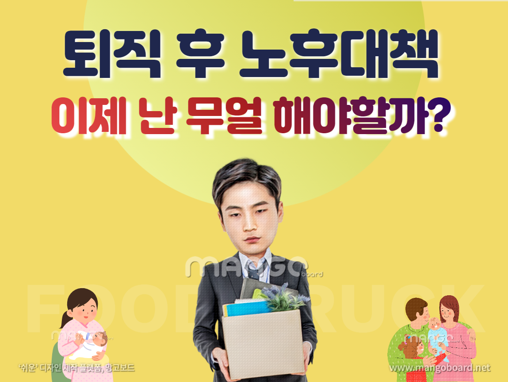
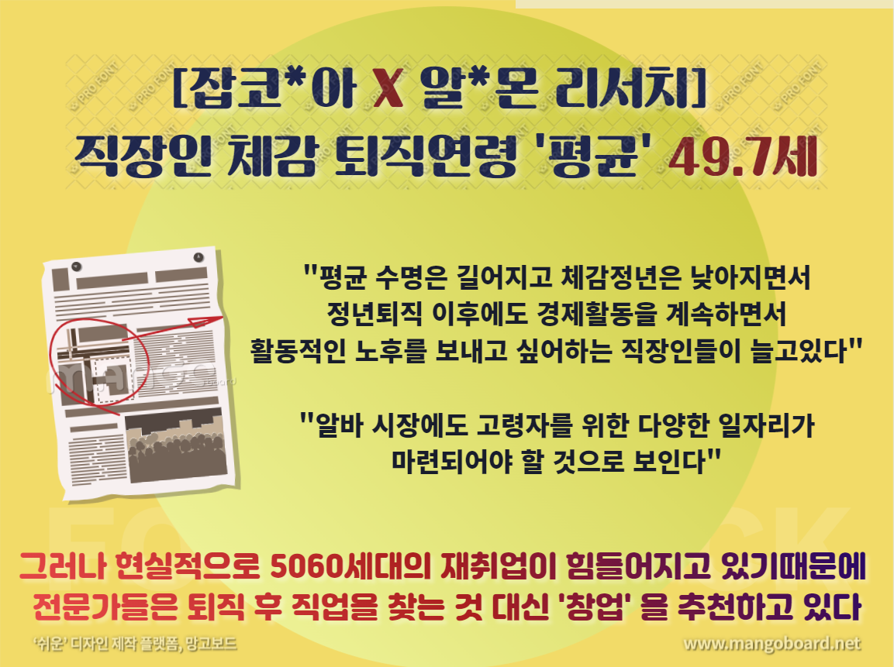
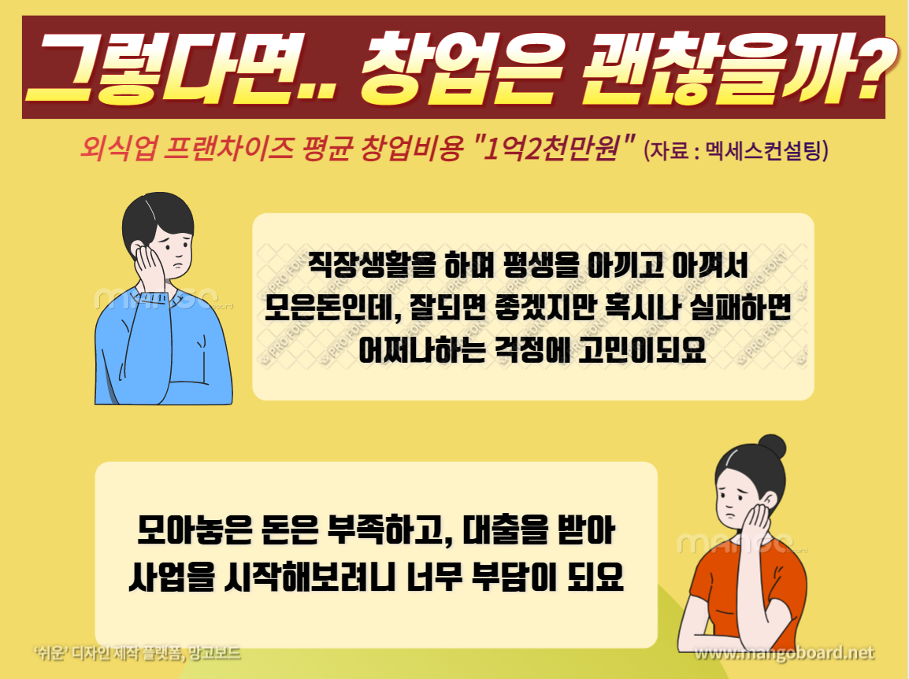
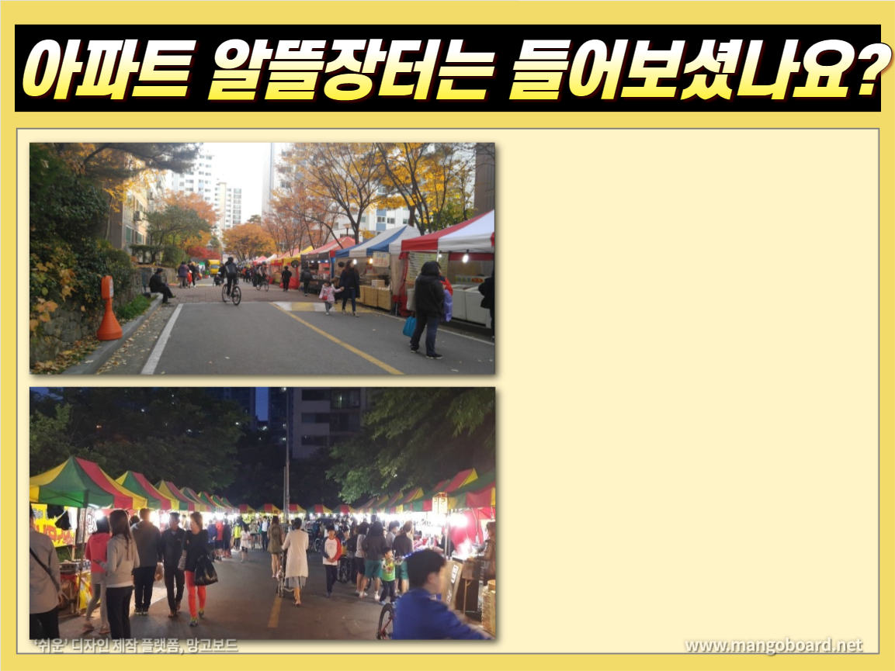

돈까스 허선생




가맹점 문의하기
이름＊
휴대폰＊
지역＊
개인정보 수집 및 이용 동의＊
개인정보 수집 및 이용 동의 개인정보취급방침은 다음과 같은 내용을 담고 있습니다. 디에이치푸드는 회원가입, 상담, 돈까스 허선생 서비스 등을 위해 아래와 같은 개인정보를 수집하고 있습니다. 1. 필수항목 : 이름, 연락처 2. 자동수집항목: 서비스 이용기록, 접속 로그, 쿠키, 접속 IP 정보 개인정보의 수집 및 이용목적 디에이치푸드는 수집한 개인정보를 다음의 목적을 위해 활용합니다. 1. 서비스 이용에 따른 본인식별, 실명확인, 서비스 이용 의사 확인 2. 디에이치푸드가 운영하는 돈까스 허선생 서비스에 관한 상담 3. 디에이치푸드가 운영하는 돈까스 허선생 서비스에 관한 마케팅 4. 불량회원 부정 이용 방지 및 비인가 사용 방지 5. 기타 원활한 양질의 서비스 제공 개인정보의 보유 및 이용기간 관계 법령의 규정에 따라 귀하의 개인정보를 보존할 의무가 있는 경우가 아닌 한, 회사는 위의 수집 및 이용목적을 달성할 때까지 귀하의 개인정보를 보유 및 이용합니다. 회원으로서 디에이치푸드가 제공하는 서비스 이용기간 동안 회원님의 개인정보는 '디에이치푸드'에서 계속 보유하게 되나 원칙적으로 개인정보의 수집 또는 제공받은 목적 달성 시 지체 없이 파기합니다. 이용약관 및 미풍양속을 해치는 등 서비스에 물의를 일으키는 경우, 불량사용자에 대해서는 이용자의 의사에 관계없이 강제 탈퇴됩니다. 개인정보의 파기절차 및 방법 디에이치푸드는 원칙적으로 개인정보 수집 및 이용목적이 달성된 후에는 해당 정보를 지체없이 파기합니다. 파기절차 및 방법은 다음과 같습니다. 파기절차 회원님이 회원가입 등을 위해 입력하신 정보는 목적이 달성된 후 별도의 DB로 옮겨져(종이의 경우 별도의 서류함) 내부 방침 및 기타 관련 법령에 의한 정보보호 사유에 따라(보유 및 이용기간 참조) 일정 기간 저장된 후 파기되어집니다. 별도 DB로 옮겨진 개인정보는 법률에 의한 경우가 아니고서는 보유되어지는 이외의 다른 목적으로 이용되지 않습니다. 파기방법 - 전자적 파일형태로 저장된 개인정보는 기록을 재생할 수 없는 기술적 방법을 사용하여 삭제합니다. 개인정보 디에이치푸드는 이용자의 개인정보를 원칙적으로 외부에 제공하지 않습니다. 다만, 아래의 경우에는 예외로 합니다. - 이용자들이 사전에 동의한 경우 - 법령의 규정에 의거하거나, 수사 목적으로 법령에 정해진 절차와 방법에 따라 수사기관의 요구가 있는 경우 * 귀하는 위와 같은 일반 개인정보의 수집 및 이용을 거부할 수 있습니다. 다만, 일반 개인정보의 필수적 수집 및 이용에 동의하지 않을 경우 문의 및 메시지 서비스 이용이 불가능합니다.
"개인정보 수집 및 이용에 동의합니다."